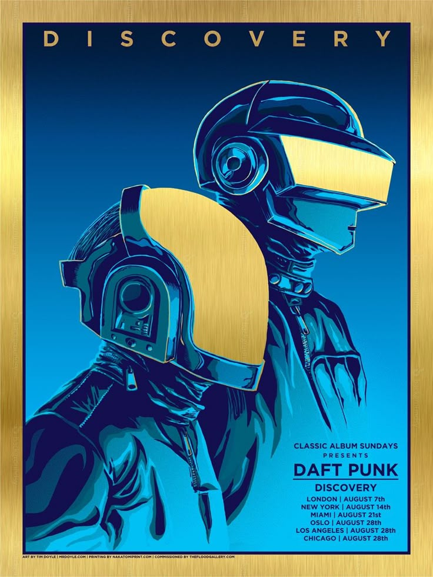

user_profile.sh
Sobre Mí_
> Name: Mario_
> Last Name: González_
> Age: 39_
> City: San Martín_
> State: Buenos Aires_
> Occupation: Software Developer_
Full Stack Developer
Soy estudiante de la Tecnicatura Superior en Desarrollo de Software en el IFTS N° 29 y Full Stack Developer Java.
Me gustan los desafíos convirtiendo problemas complejos en soluciones simples e intuitivas.
Habilidades_


 GitHub
GitHub
Películas Favoritas_
Interstelar
Marte - Misión Rescate
Talentos Ocultos
Ratatouille
El Padrino
Ralph el Demoledor
Discos Favoritos_
